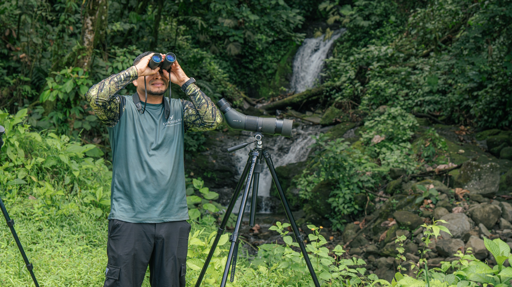

SAM_9245.jpg
Adult wearing helmet and harness on a canopy cable, smiling against foliage.
AR02, PA-CH-07, PA-AR-02
Keep head, raised hands and feet together; landscape inset avoids cutting equipment.
Original photograph / 4:5 feed / 9:16 Story. Internal review · Not published.
Adult wearing helmet and harness on a canopy cable, smiling against foliage.
AR02, PA-CH-07, PA-AR-02
Keep head, raised hands and feet together; landscape inset avoids cutting equipment.

Adult in orange top, blue Ecoglide helmet and harness on a canopy cable.
CH03, PA-CH-02, PA-AR-07
Centred subject is clear; preserve feet and overhead attachment in an inset.

Guests in a blue inflatable raft on calm river water, surrounded by forest.
CH09, AR06
Keep raft and river together in a landscape inset; not white-water rafting.

Guide in Chachagua-branded shirt looking through binoculars beside a waterfall; spotting scope nearby.
AR09
Keep guide, binoculars and waterfall together; inset preserves the scene.